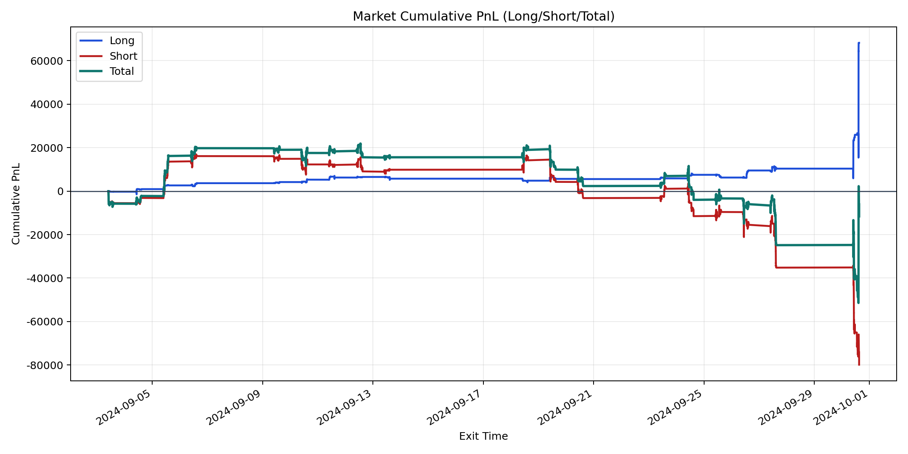
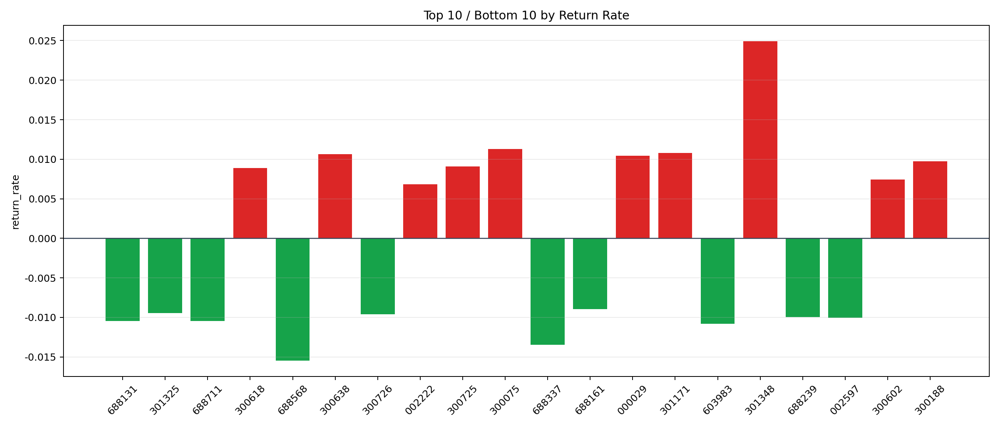

| repo_root | /home/haoranyou/data/output/alpha0.4_1w_5s_3ticks_index_filter/index_weights_1000 |
|---|---|
| period_months | 1 |
| period_label | 2024-09-03_to_2024-09-30 |
| start_time | 2024-09-03 09:50:17 |
| end_time | 2024-09-30 15:00:01 |
| n_trades | 13440 |
| n_symbols | 431 |
| total_pnl | -11628.256449999846 |
| long_total_pnl | 68221.96344999998 |
| short_total_pnl | -79850.21989999984 |
| total_entry_notional | 126343849.0 |
| long_entry_notional | 20282637.0 |
| short_entry_notional | 106061212.0 |
| total_return_rate | -9.203658541382451e-05 |
| long_return_rate | 0.003363564779569835 |
| short_return_rate | -0.0007528692006649881 |
| top_symbols_by_return | ["301348", "300075", "301171", "300638", "000029", "300188", "300725", "300618", "300602", "002222"] |
| bottom_symbols_by_return | ["688568", "688337", "603983", "688131", "688711", "002597", "688239", "300726", "301325", "688161"] |

